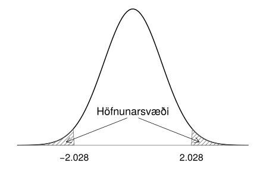
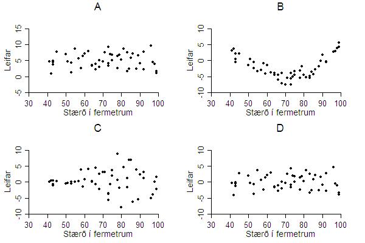

10. Aðhvarfsgreining¶
Umfjöllunarefni þessa kafla er aðhvarfsgreining (e. regression). Aðhvarfsgreining er gífurlega almenn aðferð sem er notuð til að kanna samband háðrar breytu (e. dependent variable) og einnar eða fleiri óháðra breyta (e. independent variables). Sé óháða breytan aðeins ein er talað um einfalt línulegt aðhvarf (e. simple linear regression) en séu þær fleiri er talað um fjölþætt línulegt aðhvarf (e. multiple linear regression). Við munum einungis fjalla um einfalt línulegt aðhvarf í þessari bók.
Með einföldu línulegu aðhvarfi viljum við finna jöfnu þeirra línu (sjá kassa 4.4.1.1 í kafla 4) sem lýsir best sambandi tveggja breyta og metur hversu gott það mat er. Stundum má áætla að orsakasamband sé á milli breytanna tveggja og þá er svarbreytan alltaf háða breytan en skýribreytan sú óháða (sjá kassa 2.2.1.8 í kafla 2.2). Það er umdeilt að nota línulega aðhvarfsgreiningu þegar ekki er orsakasamband milli breytanna og munum við því ekki taka dæmi um slíkt. Við munum gera ráð fyrir að það sé orsakasamband á milli breytanna og því getum við talað um háðu breytuna sem svarbreytu og þá óháðu sem skýribreytu.
Það gefur að skilja að það er lítið vit í að framkvæma línulegt aðhvarf nema sambandi breytanna sé yfir höfuð hægt að lýsa með beinni línu. Fyrsta skrefið í allri aðhvarfsgreiningu ætti því ætíð að vera að skoða punktarit af breytunum (kafli 3.4) til að kanna hvort svo sé. Ef okkur sýnast punktarnir þyrpast í kringum einhverja beina línu er sambandið línulegt. Ef við sjáum skýr merki um sveigjur í punktaritinu getur sambandið ekki verið línulegt.
10.1. Einfalt línulegt aðhvarf¶
10.1.1. Einfalt línulegt aðhvarf¶
Byrjum á því að rifja aftur upp dæmi 3.4.1.2 þar sem Þorgerður og Birna könnuðu samband bjórdrykku og áfengismagns í blóði. Markmið línulegrar aðhvarfsgreiningar væri að meta jöfnu línu sem lýsir sambandi bjórdrykku og áfengismagnsins í blóðinu sem og að meta hversu áreiðanlegt þetta samband sé.
Í einföldu línulegu aðhvarfi göngum við út frá því að skýribreytan sé föst (e. fixed), það er að segja að skýribreytan sé ekki slembin (e. random). Við getum líka orðað það sem svo að við trúum því að það sé engin óvissa í mælingum okkar á skýribreytunni. Svarbreytan er hins vegar slembin og dreifing hennar er háð \(x\). Við notum \(Y\) til að tákna svarbreytuna og \(x\) til að tákna skýribreytuna. Í dæminu um bjórdrykkjuna útleggst það svo að engin óvissa sé fólgin í því hversu marga bjóra hver og einn einstaklingur drakk, en hins vegar geti verið óvissa fólgin í því hversu mikið áfengismagn í blóði mælist í kjölfarið.
Aðhvarfslína (e. regression line) er bein lína sem lýsir því hvernig svarbreytan \(Y\) breytist þegar skýribreytan \(x\) breytist. Aðhvarfslínan er oft notuð til að spá (e. predict) fyrir um það hvaða gildi \(Y\) mun taka fyrir gefið gildi á \(x\). Þegar við notum aðhvarfslínuna til að spá fyrir um gildi á \(Y\) þá táknum við spágildin með \(\hat{y}\), lesið \(y\)-hattur. Í dæminu okkar spáir aðhvarfslínan fyrir um hve mikið áfengismagn mun mælast í blóði eftir að tiltekinn fjöldi bjóra hefur verið drukkinn.
10.1.1.1. Aðhvarfsgreiningarlíkanið (simple linear regression model)¶
Athugið
Einfalda aðhvarfsgreiningarlíkanið (e. simple linear regression model) má skrifa sem
þar sem \(\beta_0\) og \(\beta_1\) eru óþekktir stikar og \(\varepsilon\) er normaldreifð slembistærð með meðaltal 0.
Skoðum nú aftur jöfnu 10.1. Við sjáum að \(\beta_0\) er skurðpunktur línunnar við y-ásinn og \(\beta_1\) er hallatala línunnar. Þetta eru hin sanna hallatala og skurðpunktur sem við ekki þekkjum og eru stikarnir oft kallaðir þýðishallatala og þýðisskurðpunktur. Við getum aftur á móti tekið úrtak og notað gögnin til að meta þá. Til að meta stikana \(\beta_0\) og \(\beta_1\) framkvæmum við því tilraun og söfnum saman gögnum fyrir \(Y\) og \(x\) og notum þau til að meta stikana.
Skoðum nú aftur bjórdæmið. Þar var safnað saman gögnum um áfengismagn í blóði og fjölda drukkinna bjóra. Út frá þessum gögnum má meta stikana í aðhvarfslíkani sem lýsir sambandi áfengismagns í blóði og fjölda drukkinna bjóra. Á mynd 10.1 má sjá gögnin úr dæminu en á myndina er einnig búið að setja nokkrar línur sem hafa ólíka skurðpunkta og hallatölur.
Mynd 10.1: Margar línur en hvaða lína er best?¶
Með því að skoða myndina er alls ekki augljóst hvaða línu er best að nota til að lýsa sambandi \(Y\) og \(x\). Við þurfum því eitthvert viðmið til að ákveða hvaða lína er best. Það viðmið sem við notum er aðferð minnstu kvaðrata.
10.1.2. Aðferð minnstu kvaðrata¶
Aðferð minnstu kvaðrata er algengasta aðferðin til að meta stikana í aðhvarfsgreiningar líkaninu. Aðferðin finnur línunni stað þar sem summa lóðréttar fjarlægðar milli einstakra punkta og línunar í öðru veldi er lágmörkuð. Þessi fjarlægð er kölluð leifar (e. residuals) . Á mynd 10.2 má aftur sjá gögnin frá dæmi 3.4.1.2 ásamt línu minnstu kvaðrata og leifunum sem merktar eru inn á myndina með örvum.
Mynd 10.2: Aðferð minnstu kvaðrata¶
10.1.2.1. Jafna aðhvarfslínu minnstu kvaðrata (least squares equation)¶
Athugið
Gerum ráð fyrir að við höfum \(n\) paraðar mælingar \((x_i,y_i)\) þar sem gera má ráð fyrir að aðhvarf \(Y\) á \(x\) sé línulegt. Táknum meðaltal og staðalfrávik \(x\) breytunnar með \(\bar{x}\) og \(s_x\) og \(y\) breytunnar með \(\bar{y}\) og \(s_y\). Fylgnina á milli \(x\) og \(y\) táknum við með \(r\). Notum \(b_0\) til að tákna mat á \(\beta_0\) og \(b_1\) til að tákna mat á \(\beta_1\). Þá reiknum við \(b_0\) og \(b_1\) með
og
Við notum stikana \(b_0\) og \(b_1\) til að smíða jöfnuna
sem við notum til að spá (e. predict) fyrir um hvert gildið á \(y\) verður fyrir þekkt gildi á \(x\).
10.1.2.2. Sýnidæmi: Einfalt línulegt aðhvarf¶
Ábending
Skoðum aftur gögnin úr dæmi 3.4.1.2. Finnið jöfnu aðhvarfslínunnar með því að nota aðferð minnstu kvaðrata.
Út frá gögnunum má reikna:
Þá getum við reiknað
og
Jafna minnstu kvaðrata er þá
10.1.3. Leifar¶
10.1.3.1. Leifar (residuals)¶
Athugið
Lóðrétta fjarlægðin frá mælingunum okkar að aðhvarfslínunni köllum við leifar og táknum með \(e\). Stærð leifa má reikna með
Punktar ofan aðhvarfslínunnar hafa jákvæða leif en punktar neðan hennar neikvæða.
Athugasemd
Ef punktur lendir ofan við aðhvarfslínuna er \(y\) gildið stærra en aðhvarfslínan spáir fyrir um. Þá er leifin jákvæð. Ef punktur lendir neðan við aðhvarfslínuna er \(y\) gildið minna en aðhvarfslínan spáir fyrir um. Þá er leifin neikvæð.
Leifar segja okkur hversu vel aðhvarfslínan lýsir gögnunum. Því skal alltaf skoða leifarnar að lokinni aðhvarfsgreiningu en til þess notum við leifarit (e. residual plot). Leifaritið sýnir leifarnar á y-ásnum og skýribreytuna á x-ásnum. Fleiri tegundir leifarita eru til en við látum þetta nægja hér. Vinstra megin á mynd 10.3 má sjá punktarit af gögnunum úr dæmi 3.4.1.2 ásamt aðhvarfslínunni. Hægra megin á myndinni má sjá leifarit fyrir sömu gögn. Takið eftir að x-ásinn er því sá sami og er á punktaritinu en y-ásinn ekki.
Mynd 10.3: Punktarit af gögnum og leifarit¶
Dreifing leifanna á að vera tilviljunarkennd umhverfis 0. Enga reglu á að sjá í leifunum. Séu þessi skilyrði brotin skal ekki nota aðhvarfslíkanið til að lýsa gögnunum. Skoðum nú mynd 10.4 þar sem sjá má fjögur leifarit.
Hér eru leifarnar dreifðar tilviljunarkennt kringum núll. Allt er eins og það á að vera.
Hér eru leifarnar dreifðar tilviljunarkennt en ekki kringum núll. Ekki ásættanlegt.
Hér fylgja leifarnar bogadregnu mynstri. Það bendir til þess að samband \(Y\) og \(x\) sé ekki línulegt. Ekki ásættanlegt.
Leifarnar eru ekki dreifðar tilviljunarkennt. Dreifni leifanna virðist aukast með hærri gildum á \(x\). Ekki ásættanlegt.
Mynd 10.4: Leifarit¶
10.1.4. Brúun og bryggjun¶
Við getum notað jöfnu aðhvarfslínunnar, jöfnu 10.4, til að spá fyrir um hvaða gildi \(Y\) mun taka fyrir ákveðið gildi á \(x\). Áður en það er gert skal skoða á hvaða bili \(x\)-gildin sem við notuðum til að meta líkanið liggja. Það getur nefnilega verið mjög vafasamt að nota jöfnu aðhvarfslínunnar til að spá fyrir um gildi á \(Y\) fyrir gildi á \(x\) sem eru ekki á sama reki og \(x\)-gildin sem notuð voru til að meta stikana í líkaninu.
10.1.4.1. Brúun (interpolation)¶
Athugið
Sé aðhvarfslíkan notað til að spá fyrir um gildi á \(Y\) fyrir eitthvert gildi á \(x\) sem er á sama reki og \(x\)-gildin sem notuð voru til að meta stikana í líkaninu er talað um að brúa.
10.1.4.2. Sýnidæmi: Brúun¶
Ábending
Skoðum nú aftur gögnin úr dæmi 3.4.1.2. Spáið fyrir um áfengismagn í blóði einstaklings sem drukkið hefur 6.5 bjóra.
Við sáum í dæmi 10.1.2.2 að jafna minnstu kvaðrata er
Enginn í rannsókninni drakk 6.5 bjóra en rannsóknin náði yfir einstaklinga sem drukkið höfðu frá einum og upp í níu bjóra. 6.5 liggur á því bili og því erum við að brúa þegar við notum aðhvarfslínuna til að spá fyrir um áfengismagnið. Við setjum 6.5 inn í stað \(x\) í jöfnunni hér að ofan og fáum að
Við spáum því að manneskja sem drekki 6.5 bjóra mælist með alkohólmagn 0.104.
10.1.4.3. Bryggjun (extrapolation)¶
Athugið
Sé aðhvarfslíkan notað til að spá fyrir um gildi á \(Y\) fyrir eitthvert gildi á \(x\) sem er fjarri þeim \(x\)-gildum sem notuð voru til að meta stikana í líkaninu er talað um að bryggja. Þetta svarar til að lengja aðhvarfslínuna. Það getur verið mjög vafasamt að bryggja!
Á mynd 10.5 má sjá niðurstöður mælinga á hæð drengja á aldrinum 3-15 ára. Sjá má á myndinni að aðhvarfslínan lýsir vel sambandi hæðar og aldurs drengja á bilinu 3-15 ára og væri því hægt að nota líkanið til að spá fyrir um hæð drengja á þeim aldri. Hins vegar væri rangt að nota líkanið til að spá fyrir um hæð drengja á aldri sem ekki liggur á bilinu 3-15 ára. Sé myndin skoðuð má til dæmis sjá að líkanið okkar spáir því að 30 ára gamall maður sé tæplega 250 cm á hæð! Hér erum við að nota líkanið til að spá fyrir um \(Y\)-gildi fyrir \(x\)-gildi sem liggur fjarri upphaflegu \(x\) gildanna. Því erum við að bryggja og það ber ávallt að varast!
Mynd 10.5: Bryggjun¶
10.1.5. Skýringarhlutfall¶
Munið að fylgni segir okkur til um stefnu og styrkleika línulegs sambands tveggja breyta en ekki hvert sambandið milli breytanna er. Fylgnistuðull hefur hins vegar beina tengingu inn í línulega aðhvarfsgreiningu, því með honum má reikna skýringarhlutfall (e. R squared).
10.1.5.1. \(r^2\) í aðhvarfsgreiningu¶
Athugið
Sé fylgnistuðullinn settur í annað veldi, \(r^2\), er talað um skýringarhlutfall. \(r^2\) stendur fyrir hlutfallslegan breytileika í \(Y\) sem er hægt að skýra út með breytingum á \(x\).
10.1.5.2. Sýnidæmi: Skýringarhlutfall¶
Ábending
Skoðum aftur dæmi 10.1.2.2. Hversu mikið af breytileika í áfengismagni má skýra út með fjölda drukkinna bjóra?
Við sáum áður að í tilrauninni var fylgnistuðullinn \(r\) = 0.894. Því fáum við að \(r^2 = 0.894^2 = 0.799.\) Því má segja að um 80% af breytileika í alkóhólmagni megi skýra með fjölda drukkinna bjóra.
10.1.6. Útlagar og áhrifamikil mæligildi¶
Útlagi (kassi 3.2.2.2) er mæligildi sem er ólíkt öðrum mæligildum í safninu. Mæligildi þar sem \(y\) gildið er frábrugðið hinum \(y\) gildunum hefur háa leif. Aðrir útlagar eru ekki endilega með háa leif . Á mynd 10.6 má sjá tvo útlaga. Útlaginn á myndinni til vinstri er með háa leif en útlaginn hægra megin ekki.
Mynd 10.6: Útlagar og leifar þeirra¶
Mæligildi er sagt áhrifaríkt (e. influential) ef útkoma útreikninga breytist mikið við það að fjarlægja það úr gagnasafninu. Mæligildi þar sem \(x\) gildið er frábrugðið hinum \(x\) gildunum (og er þar af leiðandi útlagi) er oft áhrifaríkt.
Skoðum nú mynd 10.7. Á myndinni vinstra megin má sjá útlaga. Gráa brotalínan er aðhvarfslínan sem fæst þegar allar mælingarnar eru notaðar til að meta hana en svarta heila línan fæst ef útlaganum er sleppt. Það sést að ekki er mikill munur á línunum og því er útlaginn ekki áhrifamikill. Skoðum við aftur á móti myndina hægra megin sést að mikill munur er á línunum og því er útlaginn þeim megin áhrifamikill.
Mynd 10.7: Áhrifamikil mæligildi¶
Það er ekki alltaf augljóst hvað gera á við útlaga og áhrifamikil mæligildi. Ágætt er að hafa eftirfarandi í huga þegar áhrifamikil mæligildi og/eða útlagar leynast í gagnasafni:
Það á alltaf að skoða útlaga og áhrifamikil mæligildi sérstaklega.
Ef mistök hafa átt sér stað skal fjarlæga mæligildið úr safninu.
Ef ekki er hægt að sýna fram á að um mistök hafi verið að ræða er oft gott að sýna útreikninga með og án þessara gilda.
Í sumum tilfellum er eðlilegast að byggja útreikninga á mælisafninu án útlaga/áhrifamikilla mæligilda en í þeim tilfellum verður að taka fram að líkanið gildi ekki fyrir mæligildi utan þess ramma mæligilda sem notuð voru við gerð líkansins.
10.2. Ályktanir í aðhvarfsgreiningu¶
Nú er kominn tími til að setja aðhvarfsgreiningu í samhengi við það sem við höfum áður lært um ályktunartölfræði. Mælingarnar okkar eru einhverri slembni háðar og því getum við fengið aðrar niðurstöður ef við endurtökum tilraunina og þar af leiðandi annað mat á aðhvarfslínunni okkar. Því er eðlilegt að reikna öryggisbil og tilgátupróf í einföldu línulegu aðhvarfi líkt og þið hafið séð svo mörg dæmi um hingað til.
Til að kanna hvaða tilgátupróf og öryggisbil eru viðeigandi skulum við skoða aftur aðhvarfsgreiningarlíkanið frá jöfnu 10.1. Ef við gerum ráð fyrir að við höfum \(n\) paraðar mælingar \((x_1,y_1), \ldots, (x_n,y_n)\), má skrifa líkanið sem
Í þessari jöfnu er \(\beta_0\) hinn sanni skurðpunktur sem við ekki þekkjum, þýðisskurðpunkturinn, og \(\beta_1\) hin sanna hallatala, þýðishallatalan. \(\beta_0\) og \(\beta_1\) eru því lýsistærðir sem við viljum bæði meta og draga ályktanir um. Við sáum hér að framan að hægt er að meta \(\beta_0\) og \(\beta_1\) með því að safna saman gögnum og nota aðferð minnstu kvaðrata. Við köllum mötin \(b_0\) og \(b_1\) (jöfnur 10.3 og 10.2). Síðar í þessum kafla munum við sjá fjölmörg öryggisbil og tilgátupróf sem varða þessa stika. Við eigum hins vegar enn eftir að skoða eina breytu í jöfnunni nánar en það eru stærðinar \(\varepsilon_i\).
10.2.1. Slembistærðin \(\varepsilon\)¶
Við notum slembistærðina \(\varepsilon\) til að lýsa þeirri óvissu sem er til staðar í mælingum okkar á \(Y\). Við gerum ráð fyrir að \(\varepsilon_i\) séu einsdreifðar óháðar slembistærðir sem fylgja normaldreifingu með meðaltal 0 og dreifni \(\sigma^2\). Við krefjumst þess að \(\varepsilon_i\) séu óháðar og einsdreifðar, til að tryggja að það sé engin kerfisbundin óvissa í mælingunum okkar og við krefjumst þess að meðaltal þeirra sé 0, því annars værum við markvisst að van- eða ofmeta aðhvarfslínuna.
Líkt og með allar slembistærðir, gefur gildi stika líkindadreifingar \(\varepsilon\) allar þær upplýsingar sem hægt er að fá um slembistærðina. Munið að normaldreifingin hefur stikana \(\mu\) og \(\sigma^2\). Í þessu tilviki vitum við að \(\mu = 0\) en við vitum ekki hvert gildi \(\sigma^2\) er. Mat á \(\sigma^2\) fæst með því að finna kvaðratsummu leifanna og deila í hana með (\(n-2\)).
10.2.2. Öryggisbil fyrir \(\beta_0\) og \(\beta_1\)¶
Þar sem mælingarnar okkar eru slembni háðar, geta allar ályktanir dregnar út frá þeim breyst í hvert sinn sem tilraunin er endurtekin. Markmið okkar í aðhvarfsgreiningu er að meta stikana \(\beta_0\) og \(\beta_1\) í aðhvarfslínunni og því er eðlilegast að skoða hversu nákvæm þau möt eru. Besta leiðin til þess er að skoða öryggisbil fyrir stikana.
10.2.2.1. Öryggisbil fyrir \(\beta_0\) (confidense interval for \(\beta_0\))¶
Athugið
Neðra mark \(1 - \alpha\) öryggisbils fyrir \(\beta_0\) er:
Efra mark \(1 - \alpha\) öryggisbils er:
Öryggisbilið má því skrifa:
þar sem \(b_0\) má reikna með jöfnu 10.3, \(n\) er fjöldi paraðra mælinga, \(\bar{x}\) er meðaltal skýribreytunnar, \(s_x\) er staðalfrávik skýribreytunnar og \(t_{1-\alpha/2,(n-2)}\) má finna í t-töflu í kafla T.2.
10.2.2.2. Öryggisbil fyrir \(\beta_1\) (confidence interval for \(\beta_1\))¶
Athugið
Neðra mark \(1 - \alpha\) öryggisbils fyrir \(\beta_1\) er:
Efra mark \(1 - \alpha\) öryggisbils er:
Öryggisbilið má því skrifa:
þar sem \(b_1\) má reikna með jöfnu 10.2, \(n\) er fjöldi paraðra mælinga, \(s_x\) er staðalfrávik skýribreytunnar og \(t_{1-\alpha/2,(n-2)}\) má finna í t-töflu í kafla T.2.
10.2.3. Spábil fyrir framtíðarmælingar¶
Við höfum séð að við getum notað aðhvarfslíkanið til að spá fyrir um gildi á \(Y\). Þessi spá er slembni háð, bæði vegna slembni í \(Y\) og óvissu í matinu okkar á stikunum. Hér að neðan má sjá hvernig reikna má spábil fyrir framtíðarmælingu á \(Y\) (það er að segja mælingu sem ekki hefur verið framkvæmd) fyrir eitthvert gildi \(x = x_0\).
10.2.3.1. Spábil fyrir framtíðarmælingar (prediction interval for future observations)¶
Athugið
Neðra mark \(1 - \alpha\) spábils fyrir framtíðarmælingu á \(Y\):
Efra mark \(1 - \alpha\) spábils er:
þar sem \(b_0\) og \(b_1\) má reikna með jöfnum 10.3 og 10.2, \(n\) er fjöldi paraðra mælinga, \(\bar{x}\) er meðaltal skýribreytunnar, \(s_x\) er staðalfrávik skýribreytunnar og \(t_{1-\alpha/2,(n-2)}\) má finna í t-töflu í kafla T.2.
10.2.4. Próf á fylgnistuðli (\(\rho\))¶
Við höfum nú séð að \(b_0\) og \(b_1\) eru möt á \(\beta_0\) og \(\beta_1\) sem við gátum reiknað út frá úrtakinu okkar. Að sama skapi lítum við svo á að fylgnistuðullinn \(r\) sem við reiknum út (sjá kassa 4.4.2.1) sé eingöngu mat á sanna fylgnistuðli þýðisins. Við táknum sanna fylgnistuðulinn með \(\rho\) sem er bókstafurinn r í gríska stafrófinu. Yfirleitt höfum við áhuga á því að sýna fram á að það sé fylgni á milli breytanna sem við erum að skoða. Það er við viljum geta fullyrt að fylgnin sé ekki 0. Því er núlltilgátan sú að \(\rho = 0\).
10.2.4.1. Tilgátupróf fyrir \(\rho\)¶
Athugið
Núlltilgátan er:
Prófstærðin er:
Ef núlltilgátan er sönn fylgir prófstærðin t dreifingu með n-2 frígráður, eða \(T \sim t_{(n-2)}\).
Gagntilgáta |
Hafna \(H_0\) ef: |
|---|---|
\(H_1: \rho < 0\) |
\(T < -t_{1-\alpha,(n-2)}\) |
\(H_1: \rho > 0\) |
\(T > t_{1-\alpha,(n-2)}\) |
\(H_1: \rho \neq 0\) |
\(T < -t_{1-\alpha/2,(n-2)}\) eða \(T > t_{1-\alpha/2,(n-2)}\) |
10.2.4.2. Sýnidæmi: Próf á fylgnistuðli¶
Ábending
Atli elskar ís. Af einskærum áhuga gerði hann rannsókn þar sem hann kannaði fylgni veltu ísbúða á einum tilteknum degi við hitastigið úti þann dag. Alls skoðaði hann útkomur fyrir 38 daga sem hann valdi af handahófi yfir árið. Fylgnin milli hitastigs og seldra ísa reyndist vera 0.5 fyrir þetta úrtak. Getur Atli fullyrt að það sé í raun fylgni milli hitastigs og ísáts? Notið \(\alpha = 0.05\)
Förum eftir leiðbeiningunum um framkvæmd tilgátuprófa:
Við ætlum að álykta um fylgni tveggja breyta og notum því tilgátupróf fyrir \(\rho\).
Notum \(\alpha = 0.05\) eins og gefið er í textanum.
Við ætlum að kanna hvort fylgnin sé önnur en núll.
\[\begin{aligned} H_0&:& \rho= 0\\ H_1&:& \rho \neq 0 \end{aligned} \]Prófstærðina reiknum við með jöfnu 10.6:
\[t = \frac{r\sqrt{n-2}}{\sqrt{1-r^2}} \]Við höfum að \(n=38\) og \(r = 0.5\). Við setjum þessar tölur inn í jöfnurnar og fáum
\[\begin{aligned} t &= \frac{0.5\sqrt{38 -2}}{\sqrt{1-0.5^2}} = \frac{0.5\sqrt{36}}{\sqrt{1-0.25}}\\ &= \frac{0.5\cdot 6}{\sqrt{0.75}} = \frac{3}{\sqrt{0.75}} = 3.46 \end{aligned} \]Við þurfum að finna höfnunarsvæðið og notum til þess t-töflu. Við flettum upp eftir \(n - 2 = 36\) frígráðum. \(t_{1-\alpha/2, (n-2)}\) = \(t_{0.975, (36)}\) = 2.028, svo við höfnum núlltilgátunni ef \(t > 2.028\) eða \(t < -2.028\).
Við sjáum að \(t = 3.46 > 2.028\) svo prófstærðin fellur á höfnunarsvæðið.
Við höfnum núlltilgátunni að fylgni milli hitastigs og ísáts sé núll og fullyrðum að það sé fylgni á milli ísáts og hitastigs úti.

10.3. Fervikagreining í aðhvarfsgreiningu¶
10.3.1. Fervikagreining í aðhvarfsgreiningu¶
Nota má fervikagreiningu til að draga ályktanir í línulegri aðhvarfgreiningu. Uppsetningin er á margan hátt svipuð og í kafla 9 þegar við notum fervikagreiningu til að draga ályktanir um meðaltöl, en fervikasummurnar eru reiknaðar á örlítið annan hátt. Fyrir sérhverja mælingu \(y_i\) gildir að
þar sem \(\bar y_.\) er meðaltal \(y\)-mælinganna og \(\hat y_i\) er spágildið fyrir \(y_i\).
Þegar aðhvarfsgreiningarlíkan er metið með jöfnu minnstu kvaðrata gildir enn fremur að
Út frá þessu reiknum við fervikasummur í einföldu línulegu aðhvarfi.
10.3.1.1. Fervikasummur í einföldu línulegu aðhvarfi (sums of squares in a simple linear regression ANOVA)¶
Athugið
Fervikasummurnar eru reiknaðar með
Heildarbreytileikanum má skipta upp í breytileika metnu gildanna annars vegar og breytileika leifanna hins vegar eða
Algengt er að setja kvaðratsummurnar upp í svokallaða fervikagreiningartöflu (e. ANOVA table). Sú tafla samanstendur af þremur dálkum og þremur línum. Fyrsti dálkurinn inniheldur fervikasummurnar (reiknaðar með jöfnum 10.7 - 10.9). Annar dálkurinn inniheldur fjölda frígráða fyrir hverja fervikasummu fyrir sig en það heiti bera stærðirnar \(1\), \(N-2\) og \(N-1\). Þriðji dálkurinn inniheldur svokallaðar meðalfervikasummur. Þær reiknum við með því að deila viðkomandi fervikasummu með fjölda frígráða sem henni tilheyra (í sömu línu). Dæmigerða fervikasummutöflu má sjá hér að neðan.
Fervikasummur |
Frígráður |
Meðalfervikasummur |
|---|---|---|
\(SS_R\) |
\(1\) |
\(MS_R = SS_R\) |
\(SS_E\) |
\(N - 2\) |
\(MS_E = \frac{SS_E}{N - 2}\) |
\(SS_T\) |
\(N - 1\) |
Fervikasummurnar má einnig nota til að reikna skýringarhlutfall með öðrum hætti. Sú framsetning útskýrir jafnvel enn betur hvers vegna \(r^2\) stendur fyrir hlutfallslegan breytileika í \(Y\) sem er hægt að skýra með breytingum á \(x\).
10.3.1.2. Skýringarhlutfall (\(R^2\))¶
Athugið
Skýringarhlutfall má reikna með jöfnunni
Það stendur fyrir hlutfallslegan breytileika í \(Y\) sem er hægt að skýra með breytingum á \(x\).
10.3.2. Tilgátupróf í fervikagreiningu fyrir aðhvarfsgreiningu¶
Tilgátuprófið sem við notum í fervikagreiningu gerir ráð fyrir að frávikin frá aðhvarfslínunni séu i.i.d. normaldreifð. Það skilyrði má kanna með því að teikna normaldreifingarrit af leifunum.
10.3.2.1. Tilgátupróf fyrir einhliða fervikagreiningu¶
Athugið
Tilgátan sem við viljum kanna er
á móti gagntilgátunni
Prófstærðin er
þar sem \(SS_R\) og \(SS_{E}\) má reikna með jöfnum 10.8 og 9.5. Sé núlltilgátan sönn fylgir prófstærðin F-dreifingu með \(1\) og \(N-2\) fjölda fríráða, eða \(F \sim F_{(1,N-2)}\), þar sem \(N\) er heildarfjöldi mældra para.
Hafna skal \(H_0\) ef \(F > F_{1-\alpha,(1,N-2)}\).
Sé núlltilgátunni hafnað er \(\beta_1\) frábrugðið núlli.
Þetta tilgátupróf er illframkvæmanlegt í höndunum en má reikna á einfaldan hátt í öllum helstu tölfræðiforritum.
10.4. Dæmi¶
10.4.1. Dæmi¶
Jöfnu beinnar línu má skrifa sem
Hver eru gildin á \(b_0\) og \(b_1\) fyrir línuna á myndinni hér að neðan?
10.4.2. Dæmi¶
Eftirfarandi tölur sýna aldur lamba (í dögum) og þunga þeirra við vigtun að hausti.
aldur |
þungi |
aldur |
þungi |
|---|---|---|---|
135 |
39 |
120 |
33 |
125 |
37 |
133 |
36 |
130 |
38 |
123 |
34 |
129 |
38 |
126 |
35 |
121 |
34 |
130 |
39 |
125 |
35 |
126 |
38 |
137 |
38 |
140 |
41 |
129 |
36 |
132 |
40 |
121 |
34 |
137 |
44 |
137 |
41 |
137 |
43 |
Meðalaldur er 129.65 dagar og staðalfrávik 6.18. Meðalþyngd er 37.65 kg og staðalfrávik 3.10. Fylgnin milli aldurs og þunga er 0.86.
Finnið jöfnu aðhvarfslínu fyrir aldur lambanna og þunga þeirra.
Hversu mikið af breytileikanum í þunga má skýra með aldri?
Hversu mikið breytist þyngdin á 30 dögum skv. aðhvarfsgreiningunni?
Spáið fyrir um þyngd lambs sem er 136 daga gamalt og gefið 95% öryggisbil fyrir spána, notið \(s_e = 1.64\).
10.4.3. Dæmi¶
Sigrún tölfræðingur er að hugsa um að kaupa sér íbúð í 101 Reykjavík.
Hún hefur áhuga á íbúðum á bilinu 40 til 100 fermetrar af stærð. Sigrún
ákveður því að taka slembiúrtak af stærð 50 af fasteignavef nokkrum. Hún
skráir svo niður verð (í milljónum króna) og stærð (í fermetrum)
íbúðanna í þeim tilgangi að skoða sambandið milli verðs og stærðar
íbúðanna. Á myndinn hér að neðan má sjá punktrit af gögnunum.
Þið getið stuðst við eftirfarandi við útreikningana:
Breyta |
Meðaltal |
Staðalfrávik |
|---|---|---|
|
20.376 |
3.526 |
|
71.040 |
16.975 |
Fylgnin (e. correlation) á milli verðs og stærðar er 0.756.
Sigrún ákveður að framkvæma aðhvarfsgreiningu. Er breytan
verðskýribreyta eða svarbreyta?Hvert er gildið á \(b_1\) í jöfnu aðhvarfslínu minnstu kvaðrata fyrir gögnin hennar Sigrúnar?
Hvert er gildið á \(b_0\) í jöfnu aðhvarfslínu minnstu kvaðrata fyrir gögnin hennar Sigrúnar?
Hversu stóran hluta af breytileikanum í verði íbúðanna má skýra með stærð?
Sigrún hefur nú áhuga á að spá fyrir hversu mikið íbúð kostar sem er 150 fermetrar af stærð. Væri Sigrún að brúa eða bryggja noti hún aðhvarfslínuna sem hún mat út frá gagnapunktunum 50?
Eftir að hafa skoðað íbúðirnar 50 aðeins nánar fellur Sigrún kylliflöt fyrir íbúð á Haðarstíg. Sú íbúð er 96 fermetrar og kostar 28.9 milljónir (sú dýrasta í gagnasafninu). Er leif þeirrar íbúðar jákæð eða neikvæð?
Óli tölfræðingur er uppalinn í Breiðholtinu. Hann og Sigrún eru miklir vinir svo Óli vill eiga Sigrúnu sem nágranna. Óli tekur ekki í mál að búa í 101 Reykjavík svo hann ákveður að kanna samband milli verðs og stærðar íbúða í Breiðholtinu með það markmið að lokka Sigrúnu í Breiðholtið. Óli metur eftirfarandi aðhvarfslíkan út frá 50 íbúðum á bilinu 40 til 100 fermetrar að stærð. Eins og í líkani Sigrúnar þá er verðið í milljónum króna og stærðin í fermetrum.
\[\hat{y} = 7.30 + 0.13x \]Spáið fyrir um verð á 60 fermetra íbúð í Breiðholtinu.
Hversu mikið hækkar verð íbúða í Breiðholtinu með hverjum fermetra samkvæmt líkaninu.
Af íbúðunum 50 sem Óli hefur skoðað líst honum best á íbúð í Dúfnahólum 10. Hún er 80 fermetrar að stærð og kostar 16.5 milljónir. Hver er gildið á leif þeirrar íbúðar?
Óli er mjög fær tölfræðingur. Því getum við gert ráð fyrir að aðhvarfslíkanið hans uppfylli öll skilyrði sem það þarf að uppfylla. Á mynd 10.8 má sjá fjögur leifarit. Hvert leifaritanna er leifarit aðhvarfslíkans Óla?
Mynd 10.8: Hvert er leifarit Óla?¶
10.4.4. Dæmi¶
Til að rannsaka hljóðmengun á svæðinu í kringum Miklubraut var
hljóðmælum komið fyrir með 20 metra millibili frá gatnamótunum
Miklabraut - Langahlíð. Tvær breytur eru i gagnasafninu,
Hljóðstyrkur og Fjarlægð.
Þið getið stuðst við eftirfarandi við útreikningana:
Breyta |
Meðaltal |
Staðalfrávik |
|---|---|---|
Hljóðstyrkur |
71.35 |
7.35 |
Fjarlægð |
90.00 |
46.41 |
Fylgnin (e. correlation) á milli hljóðstyrks og fjarlægðar er -0.94.
Á myndinni hér að ofan má sjá punktrit af gögnunum. Á myndina er einnig búið að teikna línu minnstu kvaðrata (e. least square line). Hver er jafna þessarar línu? Gefið stikana (e. parameters) með tveimur aukastöfum (þið eigið að reikna út stærð stikana í jöfnunni ekki lesa þá út frá grafinu).
Notið líkanið sem þið fenguð í lið a) til að spá (e. predict) fyrir um hljóðstyrk 90 metra annars vegar og hins vegar 500 metra frá gatnamótunum. Eru báðar þessar spár áreiðanlegar? Rökstyðjið svar ykkar.
Hversu mikinn hluta af breytilekanum í hljóðstyrknum má skýra með fjarlægð frá gatnamótunum?
Á myndinni hér að neðan má sjá samsvarandi gögn en frá tveimur öðrum stöðum í borginni. Á hvorum staðnum er sambandið milli hljóðstyrks og fjarlægðar sterkara? Rökstyðjið svarið ykkar.